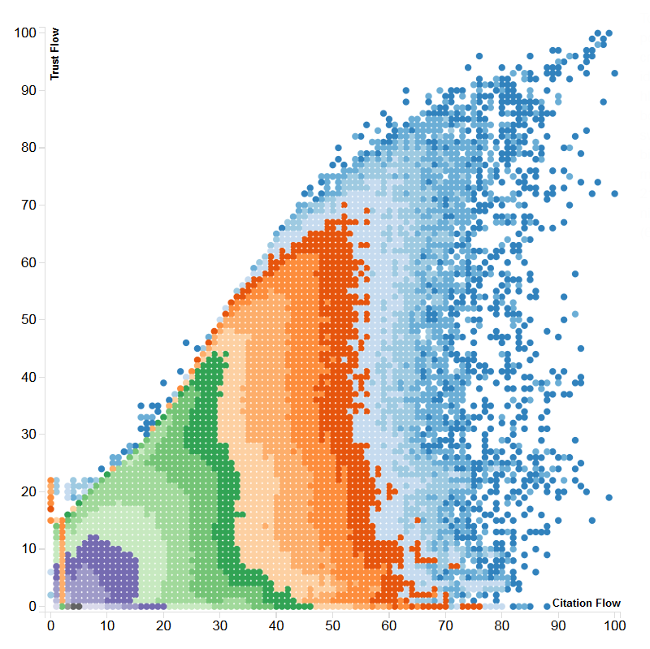
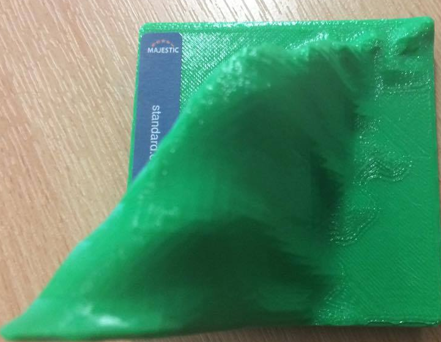

A Joint Citation/Trust Flow Metric
Tom Goodman
Tom Goodman
Trust Flow and Citation Flow are Majestic's iconic descriptors for sites,
but how do you combine these into a single, descriptive metric?
This is what we're going to try and answer.

This is Majestic's heatmap of the internet.
It shows where every site on the internet falls, based on their Trust and Citation flows.
On the y-axis is Trust Flow, which is how trustworthy a site is, based on it's backlinking sites.
On the x-axis is Citation Flow, which is how linked-to a site is.
Each coloured band contains the same number of sites as eachother.
If we take points at the visual "tip" of each of the coloured band sections - denoted by the arrows - it's clear that it would be possible to plot a curve that runs along the points.
This curve runs along the ridge of the three dimensional model:

Along the z-axis of this model is the total number of sites that fall at that
point, which means that the sites that fall on the ridge are the "average" sites.
By performing non-linear regression on the data points,
it results in a sigmoidal function (an S-shaped curve) as follows:
$$f(c) = 18087660 - \frac{18087660}{(0.0109887c^{1.61008}+1)^{1.86131*10^{-6}}}$$
This takes any given Citation Flow, c, and will return the Trust Flow that lies on the ridge of the model.
As part of our metric, it will be useful to work out the shortest distance from any point on the graph to this curve.
But HOW do we do this?
In order to find the distance from any arbitrary point (x, y) to the curve that we defined before, we will work
out how to find the distance from (x, y) to any given curve. Take the graph of $y=x^{3}$, for example:
After adding an arbitrary point, A$(x_{0}, y_{0})$, it is possible to draw both a vertical and horizontal line
from that point to touch the curve. These points lie at B$(x_{0},f(x_{0}))$ and C$(f^{-1}(y_{0}),y_{0})$ respectively,
and subtend an angle of $90^{\circ}$.
From here, it is possible to draw a further line, between points B and C,
forming the hypotenuse of the right-angled triangle, BAC.
The length of the line AB is the difference in the y-values of the two points - $y_{0}-f(x_{0})$, and the length of the line AC is the difference in the x-values of the two points - $(f^{-1}(y_{0})-x_{0})$. Furthermore, the length of the hypotenuse, BC, can be found via Pythagoras' Theorem: $$\sqrt{(f^{-1}(y_{0})-x_{0})^{2} + (y_{0}-f(x_{0}))^{2}}$$
The required value for the basic approximation is the height of the triangle BAC. Because it is right-angled, the area is equal to $\frac{|AB||AC|}{2}$. The area of any triangle is also equal to $\frac{|BC|h}{2}$. By setting these expressions equal to one another, and rearranging, the resulting expression for height is: $$ h=\frac{|AB||AC|}{|BC|} = \frac{(f^{-1}(y_{0})-x_{0})(y_{0}-f(x_{0}))}{\sqrt{(f^{-1}(y_{0})-x_{0})^{2} + (y_{0}-f(x_{0}))^{2}}}$$ To take a greater proportion of cases into account, it is worth taking the minimum value of h, $|AB|$ and $|AC|$. For example: $$ h=min\Bigg(\Bigg(\frac{(f^{-1}(y_{0})-x_{0})(y_{0}-f(x_{0}))}{\sqrt{(f^{-1}(y_{0})-x_{0})^{2} + (y_{0}-f(x_{0}))^{2}}}\Bigg),\ |(f^{-1}(y_{0})-x_{0})|,\ |(y_{0}-f(x_{0}))|\Bigg)$$
The previously derived expression for the approximation can often wildly over or underestimate, given the right circumstance. Take for example, the following attempt to apply the current method:
In this example, the point that h reaches is nowhere near the closest point on the line - there is still a lot of space between them. Consider then, the midpoint of the hypotenuse - From the midpoint, it is possible to apply the same process as from the original point, and then take the sum of both results. For example:
It is clear that the sum of the two calculated values ($h1 + h2$) is a significantly more
accurate estimate of the distance to the curve.
Define a function, h(x,y), that returns the minimum value in the set that contains the
result of the auxiliary function, a(x,y), the vertical distance and the horizontal distance:
$$h(x, y) = min(\ a(x,y),\ |(f^{-1}(y)-x)|,\ |(y-f(x))|)$$
Then define the auxiliary function, a(x,y), that handles the recursive aspect of the approximation:
$$a(x,y) = \Bigg( \frac{(f^{-1}(y)-x)(y-f(x))}{\sqrt{(f^{-1}(y)-x)^{2}+(y-f(x))^{2}}} \Bigg)\ +\ a\Bigg( \frac{x+f^{-1}(y)}{2}, \frac{f(x)+y}{2} \Bigg)$$